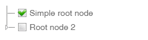
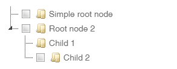

jstree复选框自定义显示隐藏和初始化默认选中
首先需要配置 Checkbox plugin
"plugins" : ['checkbox']state: {checked: true}$.jstree.defaults.checkbox.tie_selection示例：
$('#demo_tree').jstree({
"core" : {
'data': [
{ "id" : "ajson1", "parent" : "#", "text" : "Simple root node", state: {checked: true}},
{ "id" : "ajson2", "parent" : "#", "text" : "Root node 2" },
{ "id" : "ajson3", "parent" : "ajson2", "text" : "Child 1" },
{ "id" : "ajson4", "parent" : "ajson2", "text" : "Child 2" },
]
},
"plugins" : ['checkbox'],
"checkbox" : {
"tie_selection": false,
}
});
jstree 本身不支持在节点中隐藏 checkbox，国外有个大佬给出一个利用 css 来隐藏的解决方案：
首先来一段 css
.no_checkbox>i.jstree-checkbox{display:none}然后在 data 的 json 数据结构中
$('#demo_tree').jstree({
"core" : {
'data': [
{ "id" : "ajson1", "parent" : "#", "text" : "Simple root node", state: {checked: true}},
{ "id" : "ajson2", "parent" : "#", "text" : "Root node 2" },
{ "id" : "ajson3", "parent" : "ajson2", "text" : "Child 1" , a_attr: {class: "no_checkbox"}},
{ "id" : "ajson4", "parent" : "ajson2", "text" : "Child 2" },
]
},
"plugins" : ['checkbox'],
});效果：

jstree version => 3.3.8
参考：
https://stackoverflow.com/questions/6112567/jstree-hide-checkbox